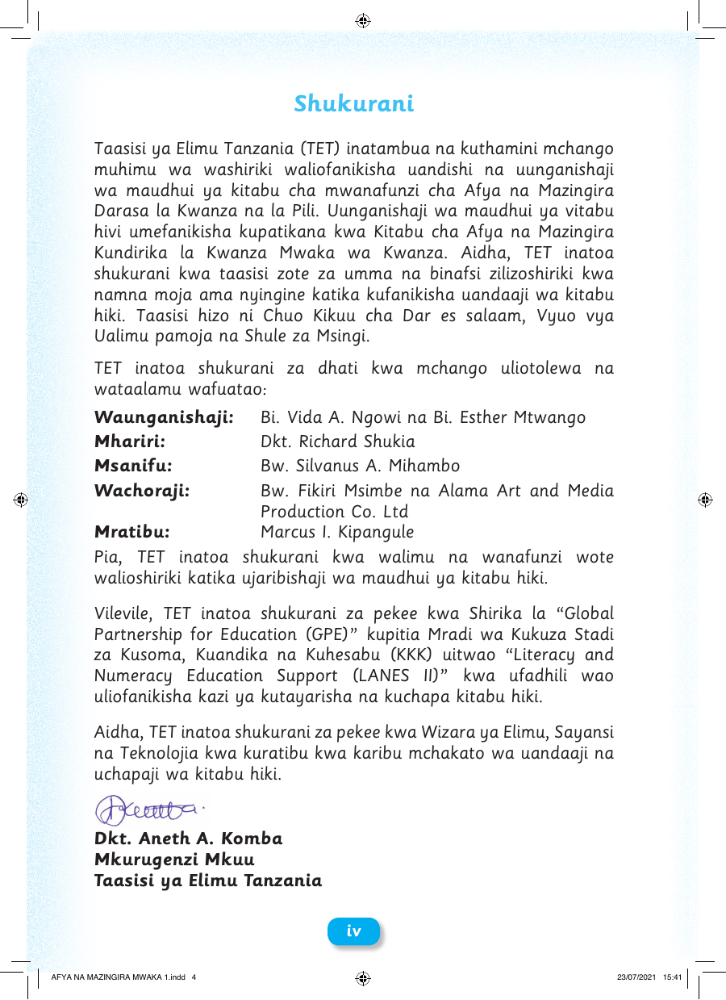

Shukurani Taasisi ya Elimu Tanzania (TET) inatambua na kuthamini mchango muhimu wa washiriki waliofanikisha uandishi na uunganishaji wa maudhui ya kitabu cha mwanafunzi cha Afya na Mazingira Darasa la Kwanza na la Pili. Uunganishaji wa maudhui ya vitabu hivi umefanikisha kupatikana kwa Kitabu cha Afya na Mazingira Kundirika la Kwanza Mwaka wa Kwanza. Aidha, TET inatoa shukurani kwa taasisi zote za umma na binafsi zilizoshiriki kwa namna moja ama nyingine katika kufanikisha uandaaji wa kitabu hiki. Taasisi hizo ni Chuo Kikuu cha Dar es salaam, Vyuo vya Ualimu pamoja na Shule za Msingi. TET inatoa shukurani za dhati kwa mchango uliotolewa na wataalamu wafuatao: Waunganishaji: Bi. Vida A. Ngowi na Bi. Esther Mtwango Mhariri: Dkt. Richard Shukia Msanifu: Bw. Silvanus A. Mihambo Wachoraji: Bw. Fikiri Msimbe na Alama Art and Media Production Co. Ltd Mratibu: Marcus I. Kipangule Pia, TET inatoa shukurani kwa walimu na wanafunzi wote walioshiriki katika ujaribishaji wa maudhui ya kitabu hiki. Vilevile, TET inatoa shukurani za pekee kwa Shirika la “Global Partnership for Education (GPE)†kupitia Mradi wa Kukuza Stadi za Kusoma, Kuandika na Kuhesabu (KKK) uitwao “Literacy and Numeracy Education Support (LANES II)†kwa ufadhili wao uliofanikisha kazi ya kutayarisha na kuchapa kitabu hiki. Aidha, TET inatoa shukurani za pekee kwa Wizara ya Elimu, Sayansi na Teknolojia kwa kuratibu kwa karibu mchakato wa uandaaji na uchapaji wa kitabu hiki. Dkt. Aneth A. Komba Mkurugenzi Mkuu Taasisi ya Elimu Tanzania iv AFYA NA MAZINGIRA MWAKA 1.indd 4 23/07/2021 15:41